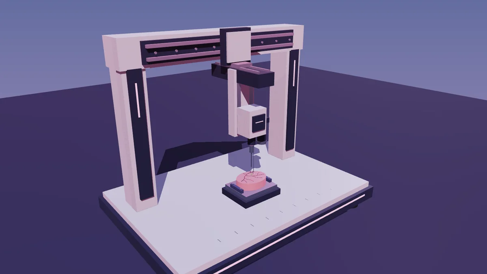
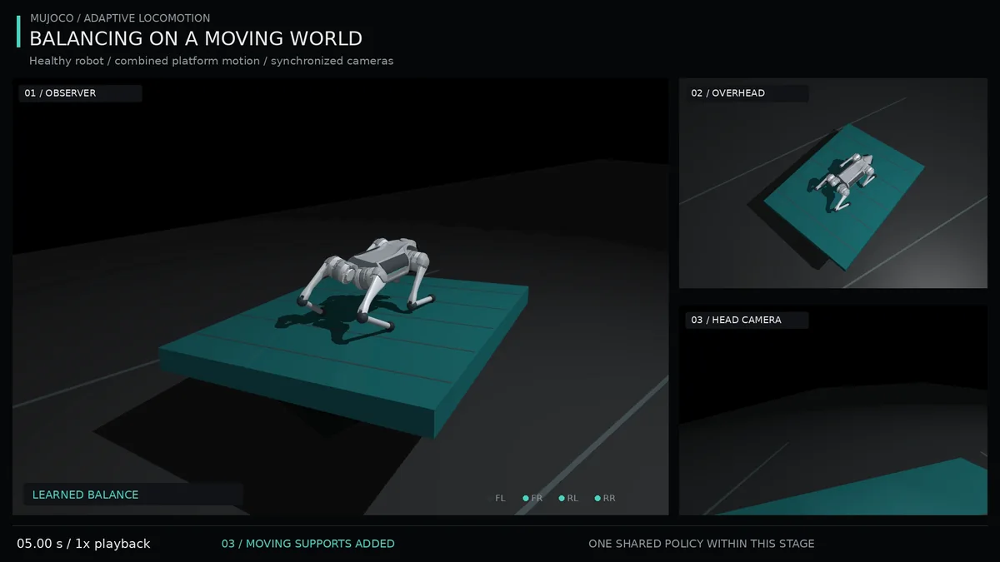
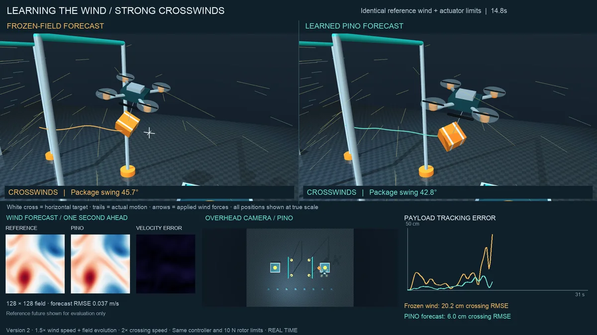
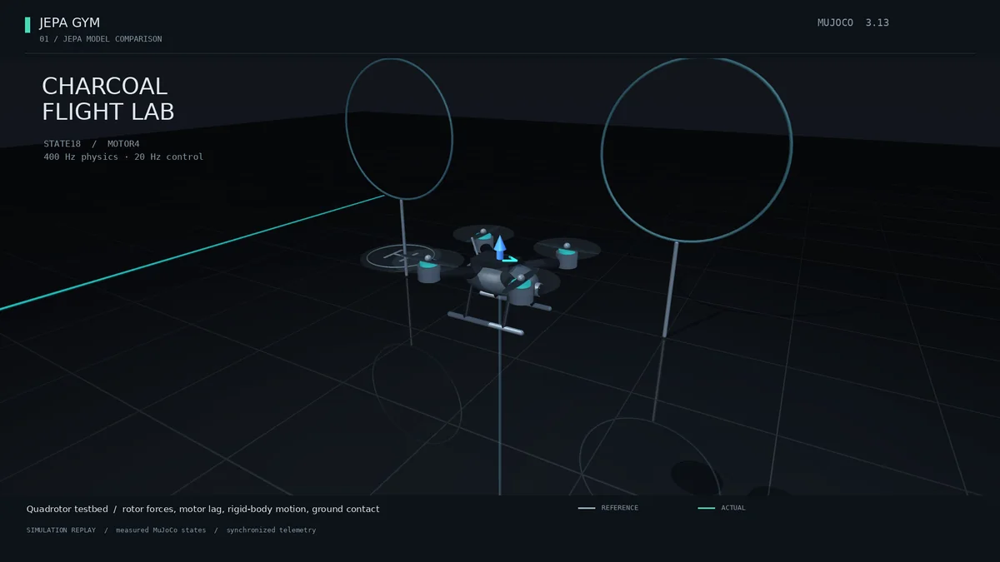
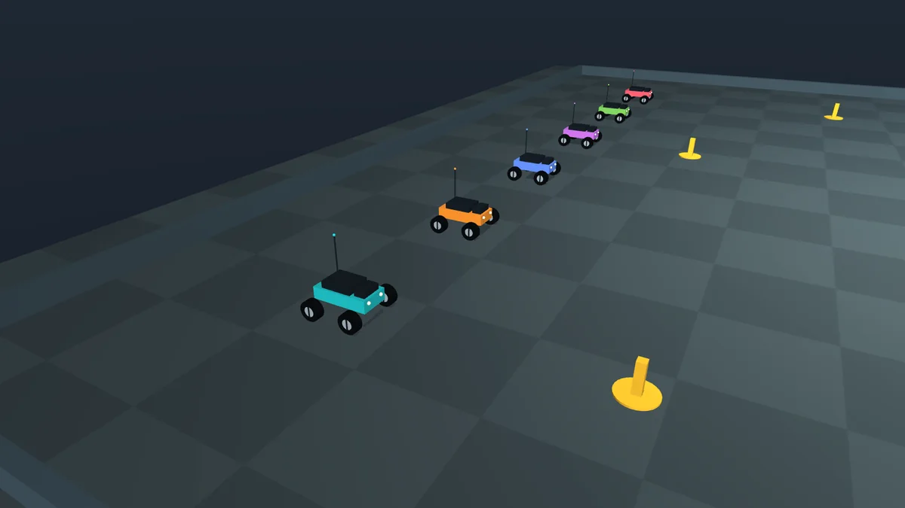
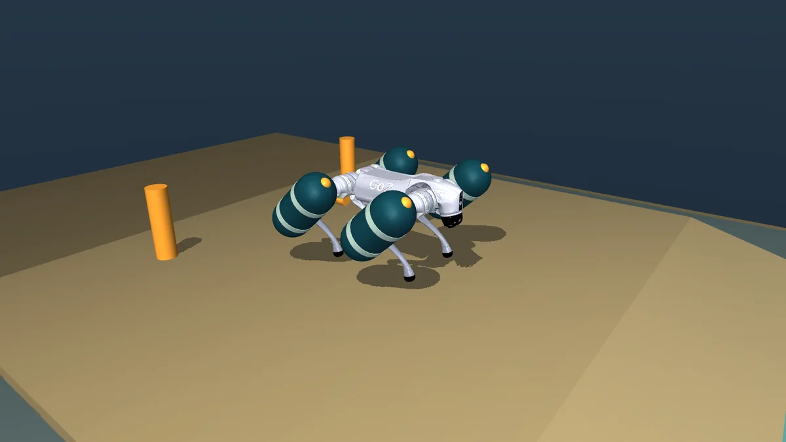
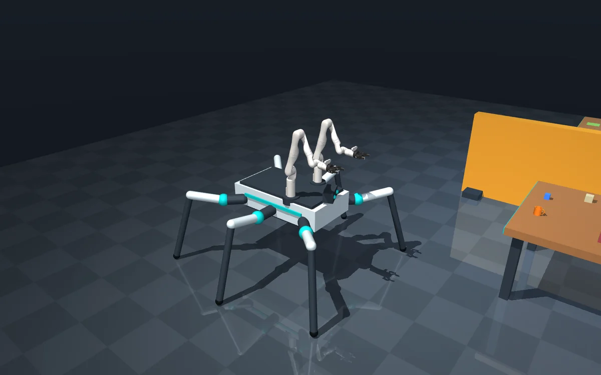

Learned · PufferLib 5.0 · RTX 4090
Surgical thread robot
A gantry needle places 40 µm threads at site after site under workcell, sensing and tissue disturbances; a learned policy lands them a median 8 µm from target.
Read the journal →

Learned · PPO · MuJoCo Warp · RTX 4090
Adaptive dog
One PPO policy walks a Unitree Go2 healthy or missing a leg, then stands and balances; one GPU relearned it all from random weights in 22 min 05 s.
Read the journal →

Learned forecasts · NeuralOperator · RTX 4090
Neural wind delivery
A quadrotor carries a slung parcel through simulated Navier–Stokes wind; learned wind forecasts cut its tracking error from 10.89 cm to 4.28–4.42 cm, and all 24 standard deliveries land.
Read the journal →

World models · JEPA · RTX 4090
JEPA drone world models
A drone world model rebuilt from a paper makes a hand-written controller track more accurately; then a MuJoCo gym puts new JEPA architectures to the test, with 1,344 learned-model flights and zero contacts.
Read the journal →

RC rovers · simulated LoRa · Reticulum
Radio-linked rovers
Six rovers share what they find over a simulated radio: no duplicate inspections with a healthy link, and no faster finish.
Read the journal →

Scripted · MuJoCo · Go2 stand-in
Amphibious quadruped
A Go2 model with four thigh-mounted floats walks into a basin, floats 10.8 s with no ground contact and climbs out on the far bank.
Read the journal →

Scripted · MuJoCo Menagerie · ripple gait
Hexapod transporter
Six legs and two Kinova arms: grasps a mug and a block by finger contact, walks around a barrier and places both 6.2 and 16.5 mm from their marks in 112.9 simulated seconds.
Read the journal →